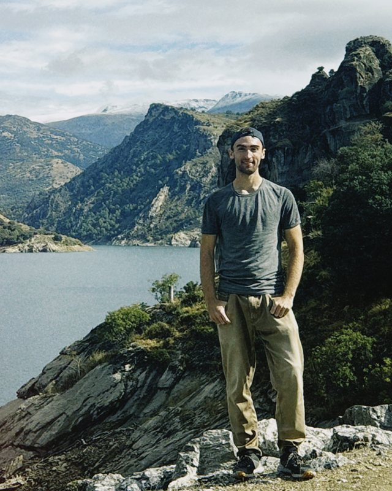

Über uns
Zwei Weltreisende, ein Segelboot und Herausforderungen beim Finden eines Laptop.
Wie SpecScout entstanden ist, und wer dahintersteht


Unsere Geschichte
Die Geschichte unserer Gründer beginnt auf einem Segelboot, bereits kurz nachdem sie die Schule abgeschlossen hatten. Erik und Johannes hatten beide ehrgeizige Pläne. Erik würde zwei Jahre lang durch Südamerika reisen, Johannes per Anhalter einmal um die ganze Welt. Gleich zu Beginn ihrer Reise stand ihnen an der Atlantikküste eine ihrer größten Herausforderungen bevor: die Überquerung eines Ozeans. Ohne Flugzeug natürlich, das wäre ja zu einfach gewesen. Beide landeten in Gibraltar, wo sie Arbeit auf demselben Boot fanden, das sie zu den Kanarischen Inseln bringen sollte. So hat ihre Geschichte angefangen. Auf den Kanaren trennten sich ihre Wege wieder, und sie überquerten den Rest des Atlantiks auf verschiedenen Booten.
Danach reiste Erik weiter durch Südamerika, während Johannes seine Reise um die Welt fortsetzte. Den Kontakt haben die beiden trotzdem nie verloren. Erik gründete dann mit einem anderen Freund sein erstes Start-up.
Das Leben ging weiter, bis Johannes eines Tages online einen gebrauchten Laptop kaufen wollte. Es frustrierte ihn unglaublich, wie schwer es war, gebrauchte Laptops zu finden, die zu seinen Anforderungen passten. Johannes fing an, genauer über das Problem nachzudenken und Lösungsansätze zu entwickeln.
Als klar war, dass es ohne Hilfe nicht weitergeht, rief Johannes Erik an, der die Erfahrung aus seinem ersten Start-up mitbrachte. Die beiden beschlossen, Anora Systems zu gründen. 2025 begannen sie, in Vollzeit an SpecScout zu arbeiten.
„Wir leben im 21. Jahrhundert. Es kann doch nicht sein, dass es immer noch so schwer ist, online gebrauchte Produkte zu finden, die zu den eigenen Anforderungen passen.“
Johannes Körner, Co-Founder
Daraus ist SpecScout geworden: vollständige, filterbare Produktdaten für jedes Angebot, damit Kunden finden, was zu ihnen passt. Für neue Produkte genauso wie für gebrauchte.
Die Gründer

Anora Systems, Inhaber Johannes Körner · Briachstraße 10, 88250 Weingarten · info@anora-systems.com · Impressum
Sprechen Sie mit uns.
Ob Fragen zu Ihrem Katalog, zu Enterprise oder einfach Feedback: Wir freuen uns, von Ihnen zu hören.